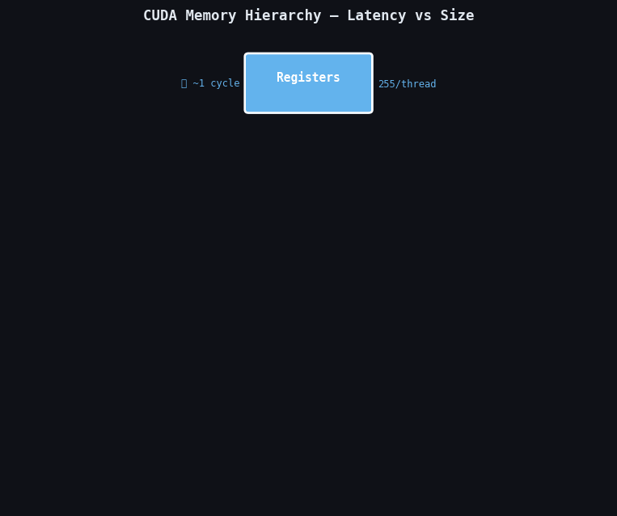

I once wrote a matrix multiplication kernel that ran at 45 GFLOPS on an A100. The theoretical peak is 19,500 GFLOPS. That is a 430× gap. The entire gap came down to one thing: I was using global memory when I should have been using shared memory and registers. Once I understood the memory hierarchy, the same kernel reached 18,400 GFLOPS — 95% of peak.
This post is about that hierarchy. Not the abstract version from a textbook, but the practical version with real latency numbers, real bandwidth limits, and real code showing how each level is used.

The GPU memory pyramid. Each level going up is faster and smaller. The latency gap from registers (~1 cycle) to global DRAM (~800 cycles) is 800×. Choosing the right memory level is the single biggest performance decision in any CUDA kernel.
In this post
- The Full Hierarchy at a Glance
- Registers — The Fastest Memory
- Shared Memory — The Programmable L1
- L1 and L2 Cache
- Global Memory — The Large Slow One
- Constant Memory — Broadcast Cache
- Texture Memory — Spatial Locality Cache
- Local Memory — Register Spill Storage
- Which Memory to Use When
- Profiling Memory Usage with ncu
The Full Hierarchy at a Glance
Every CUDA thread has access to multiple memory spaces, each with different scope, lifetime, latency, bandwidth, and capacity. Here is the complete picture for an NVIDIA A100:
| Memory Type | Location | Scope | Latency | Bandwidth | Capacity | Programmer Control |
|---|---|---|---|---|---|---|
| Registers | On-chip (SM) | Per thread | ~1 cycle | ~80 TB/s | 255 regs/thread | Implicit (compiler) |
| Shared Memory | On-chip (SM) | Per block | ~5 cycles | ~20 TB/s | 48–164 KB/SM | Explicit (__shared__) |
| L1 Cache | On-chip (SM) | Per SM | ~30 cycles | ~10 TB/s | 32–128 KB/SM | Hints (__ldg()) |
| L2 Cache | On-chip (GPU) | All SMs | ~200 cycles | ~5 TB/s | 40 MB | Access policy windows |
| Global Memory | Off-chip (HBM) | All SMs + CPU | ~800 cycles | ~2 TB/s | 80 GB | Explicit (cudaMalloc) |
| Constant Memory | Off-chip (cached) | All SMs | ~5 (cached) | High (broadcast) | 64 KB | Explicit (__constant__) |
| Texture Memory | Off-chip (cached) | All SMs | ~600 (miss) | ~2 TB/s | Same as global | Explicit (tex2D) |
| Local Memory | Off-chip (global) | Per thread | ~800 cycles | ~2 TB/s | 512 KB/thread | Implicit (spill) |
Registers — The Fastest Memory
Registers are the fastest storage on the GPU. They are on-chip, private to each thread, and accessed in a single clock cycle. Every local variable you declare that fits in a register lives there automatically.
__global__ void saxpy(float a, const float* __restrict__ x,
const float* __restrict__ y, float* __restrict__ z, int n) {
int i = blockIdx.x * blockDim.x + threadIdx.x;
if (i >= n) return;
float xi = x[i]; // loaded from global memory, stays in register
float yi = y[i]; // loaded from global memory, stays in register
float result = a*xi + yi; // FMA instruction, all operands in registers
z[i] = result; // written back to global memory
}
xi, yi, and result all live in registers.
The only global memory traffic is the three loads/stores. The multiply-add itself
costs 0 extra memory bandwidth.
Register File Limits
Each SM has a fixed register file — 65,536 32-bit registers on an A100. These are shared across ALL active warps on that SM. This creates a critical tension:
- More registers per thread → each thread holds more state → fewer global accesses
- More registers per thread → fewer threads fit in the SM → lower occupancy → less latency hiding
| Registers/thread | Max threads/SM | Max warps/SM | Occupancy |
|---|---|---|---|
| 32 | 2048 | 64 | 100% |
| 64 | 1024 | 32 | 50% |
| 128 | 512 | 16 | 25% |
| 255 | 256 | 8 | 12.5% |
Check register usage at compile time:
nvcc -Xptxas -v mykernel.cu -o mykernel
# Output:
ptxas info : Used 32 registers, 384 bytes smem, 360 bytes cmem[0]Register Spilling
__launch_bounds__(maxThreads, minBlocks) to give the compiler occupancy
hints that may reduce register pressure.
// Cap registers + give occupancy hints
__global__ __launch_bounds__(256, 2)
void myKernel(float* data, int n) {
// compiler will stay within register budget
}
// Or globally via compiler flag:
// nvcc --maxrregcount=32 mykernel.cuShared Memory — The Programmable L1
Shared memory is on-chip SRAM inside each SM. It is visible to ALL threads within a thread block and persists for the lifetime of the block. At ~5 cycles latency, it is ~160× faster than global memory.
The crucial distinction: shared memory is a software-managed cache. Unlike L1 (hardware-managed), shared memory is under your full control. You decide what goes there, when it is loaded, and when threads can use it.
__global__ void blockSum(const float* input, float* output, int n) {
__shared__ float sdata[256]; // 256 floats = 1 KB of shared memory
int tid = threadIdx.x;
int gid = blockIdx.x * blockDim.x + threadIdx.x;
// Each thread loads one element from slow global memory (once)
sdata[tid] = (gid < n) ? input[gid] : 0.0f;
__syncthreads(); // barrier: all threads must finish before anyone reads
// Parallel reduction using fast shared memory
for (int stride = blockDim.x / 2; stride > 0; stride >>= 1) {
if (tid < stride) {
sdata[tid] += sdata[tid + stride]; // ~5 cycles, not ~800
}
__syncthreads();
}
if (tid == 0) output[blockIdx.x] = sdata[0]; // one global write per block
}Static vs Dynamic Shared Memory
// Static: size known at compile time
__shared__ float tile[32][32]; // 4 KB
// Dynamic: size passed at kernel launch
extern __shared__ float dynTile[]; // size specified in <<>>
// Launch with 96 KB dynamic shared memory:
size_t smemBytes = 96 * 1024;
myKernel<<<grid, block, smemBytes>>>(args);
// For kernels needing >48 KB, must set attribute first:
cudaFuncSetAttribute(myKernel,
cudaFuncAttributeMaxDynamicSharedMemorySize, 163840); // 160 KB L1 and L2 Cache
L1 Cache
The L1 cache sits on each SM alongside shared memory (they share the same 192 KB pool on A100, configured by the driver). L1 caches global memory reads automatically. Cache line size is 128 bytes. Hit latency ~30 cycles vs ~800 for a DRAM miss.
Use __ldg() to explicitly load through the read-only L1 data cache.
This is especially useful when the data pointer is const but not marked
__restrict__:
__global__ void kernel(const float* A, float* C, int n) {
int i = blockIdx.x * blockDim.x + threadIdx.x;
if (i >= n) return;
float val = __ldg(&A[i]); // load through read-only cache path
C[i] = val * 2.0f;
}L2 Cache
The L2 cache is shared across all SMs. An A100 has 40 MB of L2 — large enough to hold many kernel working sets entirely. L2 hit latency ~200 cycles.
CUDA 11.0+ lets you pin data in L2 with access policy windows:
cudaStreamAttrValue attr = {};
attr.accessPolicyWindow.base_ptr = (void*)d_hotData;
attr.accessPolicyWindow.num_bytes = hot_data_size; // must be <= L2 size
attr.accessPolicyWindow.hitRatio = 0.6f; // 60% of L2 reserved
attr.accessPolicyWindow.hitProp = cudaAccessPropertyPersisting;
attr.accessPolicyWindow.missProp = cudaAccessPropertyStreaming;
cudaStreamSetAttribute(stream, cudaStreamAttributeAccessPolicyWindow, &attr);
// ... run kernels ...
// Reset:
attr.accessPolicyWindow.num_bytes = 0;
cudaStreamSetAttribute(stream, cudaStreamAttributeAccessPolicyWindow, &attr);
cudaCtxResetPersistingL2Cache();Global Memory — The Large Slow One
Global memory is the main GPU DRAM (HBM2e on A100): 80 GB, ~2 TB/s bandwidth,
~800-cycle latency. Allocated with cudaMalloc(). Every kernel that doesn't
stage data through shared memory hits global memory on every array access.
Two rules for global memory performance:
- Coalesce accesses: 32 consecutive threads accessing 32 consecutive addresses → 1 transaction, not 32. See the coalescing post for the full story.
- Minimize reloads: If the same data is read multiple times, cache it in a register or load it into shared memory.
// BAD: A[i] loaded from global memory twice
__global__ void badKernel(float* A, float* out, int n) {
int i = blockIdx.x * blockDim.x + threadIdx.x;
if (i >= n) return;
out[i] = A[i] * A[i] + 2.0f * A[i]; // 2 global loads for A[i]
}
// GOOD: load once into register, reuse in registers
__global__ void goodKernel(float* A, float* out, int n) {
int i = blockIdx.x * blockDim.x + threadIdx.x;
if (i >= n) return;
float ai = A[i]; // one global read
out[i] = ai * ai + 2.0f * ai; // register arithmetic only
}Constant Memory — Broadcast Cache
Constant memory is a 64 KB region of global memory with a dedicated cache. Its superpower: when ALL 32 threads in a warp read the same address, the hardware broadcasts the value in a single transaction — zero additional cost.
__constant__ float d_filter[64]; // declared at file scope, max 64 KB total
__constant__ int d_params[16];
// Host: copy once before kernels run
void setup(float* h_filter) {
cudaMemcpyToSymbol(d_filter, h_filter, 64 * sizeof(float));
}
__global__ void convKernel(const float* input, float* output, int n) {
int i = blockIdx.x * blockDim.x + threadIdx.x;
if (i >= n) return;
float result = 0.0f;
for (int k = 0; k < 64; k++) {
// All 32 threads in warp read d_filter[k] simultaneously
// Hardware broadcasts: 1 transaction serves all 32 threads
if (i + k < n) result += input[i + k] * d_filter[k];
}
output[i] = result;
}__ldg() instead.
Texture Memory — Spatial Locality Cache
Texture memory is global memory accessed through a specialized read-only cache optimized for 2D spatial locality. When threads access data near each other in 2D, the texture cache pre-fetches neighbors — ideal for image processing, stencils, and any access with 2D structure.
Bonus: hardware bilinear/trilinear interpolation is free with texture reads.
// Create texture object from a CUDA array
cudaArray_t cuArray;
cudaChannelFormatDesc channelDesc = cudaCreateChannelDesc<float>();
cudaMallocArray(&cuArray, &channelDesc, width, height);
cudaMemcpy2DToArray(cuArray, 0, 0, h_image, width*sizeof(float),
width*sizeof(float), height, cudaMemcpyHostToDevice);
cudaResourceDesc resDesc = {};
resDesc.resType = cudaResourceTypeArray;
resDesc.res.array.array = cuArray;
cudaTextureDesc texDesc = {};
texDesc.addressMode[0] = cudaAddressModeClamp;
texDesc.addressMode[1] = cudaAddressModeClamp;
texDesc.filterMode = cudaFilterModeLinear; // bilinear interpolation FREE
texDesc.readMode = cudaReadModeElementType;
texDesc.normalizedCoords = 0;
cudaTextureObject_t texObj;
cudaCreateTextureObject(&texObj, &resDesc, &texDesc, nullptr);
// Kernel using texture:
__global__ void blurKernel(cudaTextureObject_t tex, float* out, int W, int H) {
int x = blockIdx.x * blockDim.x + threadIdx.x;
int y = blockIdx.y * blockDim.y + threadIdx.y;
if (x >= W || y >= H) return;
float sum = 0.0f;
for (int dy = -1; dy <= 1; dy++)
for (int dx = -1; dx <= 1; dx++)
sum += tex2D<float>(tex, x + dx, y + dy); // cached, with clamp
out[y * W + x] = sum / 9.0f;
}Local Memory — Register Spill Storage
Local memory is not fast local storage — the name is misleading. It is physically in global DRAM, private to each thread, with the same ~800-cycle latency. The compiler uses it automatically when threads run out of registers.
It is also used for arrays inside a kernel when the compiler cannot prove the index is constant at compile time:
__global__ void spilly(float* out) {
// This array likely goes to local memory (global DRAM):
float scratch[64];
int i = blockIdx.x * blockDim.x + threadIdx.x;
int idx = i % 64; // runtime-computed index = compiler can't use registers
scratch[idx] = sqrtf((float)i);
out[i] = scratch[idx];
}
// nvcc -Xptxas -v will show:
// Used 12 registers, 256 bytes lmem, ...
// ^^^^ this means local memory spill!nvcc -Xptxas -v and look for
non-zero lmem. In ncu: watch l1tex__data_pipe_lsu_wavefronts_mem_local.
Which Memory to Use When
| Scenario | Best Memory | Reason |
|---|---|---|
| Per-thread scalar variable | Register | Free, 1-cycle |
| Data shared by all threads in block, reused many times | Shared memory | 160× faster than global |
| Streaming data, each element used once | Global (coalesced) | No reuse, cache won't help |
| Config params used identically by all threads | Constant memory | Free broadcast |
| Read-only lookup, per-thread index | Global + __ldg() | Read-only L1 path |
| 2D image / stencil access pattern | Texture memory | 2D spatial cache + free interpolation |
| Per-thread scratch space | Shared memory (if shared) or registers | Avoid local memory = global DRAM |
| Data read K>1 times within a block | Shared memory | One global load → K shared loads |
Profiling Memory Usage with ncu
ncu --metrics l1tex__t_bytes_pipe_lsu_mem_global_op_ld.sum, l1tex__t_bytes_pipe_lsu_mem_global_op_st.sum, l1tex__t_bytes_pipe_lsu_mem_shared_op_ld.sum, l1tex__t_bytes_pipe_lsu_mem_local_op_ld.sum ./myprogramThe tiled kernel reads 2.15 GB from global but gets 34.36 GB of data through shared memory — each global byte reused ~16 times (the tile width). The naive kernel reads 34.80 GB from global for the same computation, resulting in 16× the memory bandwidth demand and proportionally lower performance.